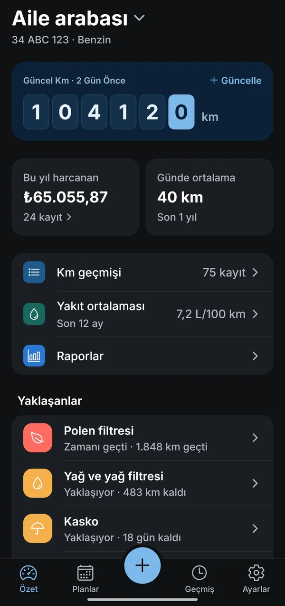

- Planlar
Ne kadar kaldı, bir bakışta.
Her bakımın aralığını aracının kılavuzuna göre sen girersin, örneğin "10.000 km veya 12 ay". Carnex hangisi önce gelecekse onu sayar ve yaklaşınca haber verir.
- Yenileme takvimi
Muayene ve sigorta takvimin.
Muayene, trafik sigortası, kasko ve MTV tarihlerini sen girersin; zamanı yaklaşınca Carnex hatırlatır.
- Geçmiş
Aracının karnesi.
Her bakımı tarih, km ve tutarla yaz; yakıt alımlarını da ekle. Geçmişin tek listede, istediğin zaman önünde; bakım ve yenileme harcamanı yıl yıl gör.
- Yedek
Yedeğin elinde.
Her hafta otomatik yedek alınır. Yedeğini istediğin yere taşırsın ve yeni telefonda geri yüklersin.
Bakımını unutma.
Geçmişin elinde.
Aracının bakımlarını, kilometresini ve önemli tarihlerini tek yerde tut. Sıradakine ne kadar kaldığını gör, zamanı yaklaşınca Carnex hatırlatsın.
Abonelik yok · üyelik yok · verilerin telefonunda
Yakında Google Play'deNasıl çalışır? ↓

Dört adımda aracının defteri.
Aralıkları ve tarihleri sen girersin; Carnex sayar, hatırlatır ve kaydını tutar.
Ayrıca.
Yakıt kaydı
Alımlarını yaz, ortalamanı gör.
Eski aracını arşivle
Araç değiştirince eskisinin geçmişi kaybolmaz.
Dışa aktar
Kayıtlarını istediğin zaman tablo dosyası (CSV) olarak al.
Abonelik yok, bir kez öde.
Carnex'i ücretsiz indirirsin; bir aracın bütün defteri ücretsizdir, süre sınırı yoktur.
Ücretsiz
- 1 araç (eskisini arşivleyip geçmişini saklayabilirsin)
- Bakım geçmişi ve hatırlatma
- Yenileme takvimi: muayene, sigorta, kasko, MTV
- Yakıt kaydı ve ortalama
- Haftalık otomatik yedek ve geri yükleme
Tam sürüm Yakında
- Sınırsız araç
- Raporlar ve grafikler: yıllık harcama, km başına maliyet, yakıt tüketimi
- PDF bakım geçmişi
- Fiş ve belge fotoğrafları
- 6 ek renk: petrol yeşili, kiremit turuncu, grafit, mürdüm, bronz, gül kurusu
Tek seferlik ödeme olacak, abonelik olmayacak. Ücretsiz olan hiçbir şey sonradan ücretli olmayacak.
Girdiğin veriler hiçbir zaman kilitlenmez: ücretsiz sürümde de her kaydını görür, düzenler, siler ve dışa aktarırsın.
Girdiğin her şey telefonunda kalır.
Carnex'in sunucusu yok. Üye olmazsın, giriş yapmazsın; reklam ve analitik yok. Yedeğini istediğin yere alırsın (telefon, SD kart ya da kendi bulut klasörün) ve yeni telefonda geri yüklersin. Verilerin yalnızca senin gönderdiğin yere gider.
Sık sorulan sorular
Tarihleri ve bakım aralıklarını uygulama mı bulur?
Hayır. Muayene ve sigorta tarihlerini, bakım aralıklarını da aracının kılavuzuna ya da servisine göre sen girersin; Carnex'te hazır plan adları var. Carnex yalnızca hatırlatır ve kaydını tutar.
Hatırlatmalar ne zaman gelir?
Bakım ve yenileme zamanı yaklaşınca, gelince ve geçince bildirim gelir. Saatini ve hangi türlerin geleceğini Ayarlar'dan seçersin.
İnternet gerekiyor mu?
Hayır. Carnex tamamen telefonunda çalışır.
Telefonumu değiştirirsem kayıtlarım ne olur?
Haftalık otomatik yedeği açarsan Carnex her hafta seçtiğin klasöre yedek alır; istediğin an "Şimdi yedekle" de diyebilirsin. Yeni telefonda Ayarlar › Yedekleme › "Yedekten geri yükle" ile kaldığın yerden devam edersin. Kayıtlarını "CSV olarak dışa aktar" ile tablo dosyası olarak da alabilirsin.
Birden fazla aracım var, ne olacak?
Ücretsiz sürümde 1 araç kullanırsın; aracını değiştirince eskisini arşivleyip geçmişini saklayabilirsin. Sınırsız araç tam sürümle gelecek: tam sürüm yakında, tek seferlik ödeme olacak, abonelik olmayacak. Fiyatı satışa çıkınca burada yazacak.
iPhone'da var mı, hangi dillerde?
Şimdilik yalnızca Android'de; Google Play'de yayımlanacak. Türkçe ve İngilizce kullanılabilir; Carnex telefonunun dilini kullanır, istersen Ayarlar'dan değiştirirsin.